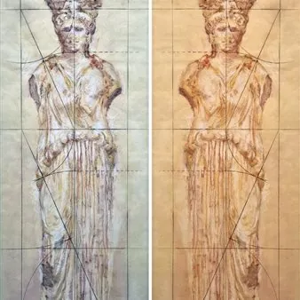

da mer 28 ott a mer 11 nov
Filosofia nella vita, Diogene Laerzio e il pensiero greco
Un autunno, alla Gang del Pensiero a Udine in via Pacifico Valussi 32, con “Filosofia nella vita, Diogene Laerzio e il pensiero greco“. Si inizia mercoledì 28 ottobre con l’installazione d’arte, site-specific, Hall / Entrata, presentata in primo appuntamento, ore 11, con gli…
 Indicazioni
Indicazioni
- Costi e prenotazioni
- Costo non indicato · Prenotazione non indicata
- Programma
- Programma da verificare. Apri la fonte ufficiale per orari e possibili aggiornamenti.
- In caso di maltempo
- Nessuna indicazione specifica pubblicata.
- Note
- Acquisito automaticamente dalla fonte.
L’EVENTO
Descrizione completa
Un autunno, alla Gang del Pensiero a Udine in via Pacifico Valussi 32, con “Filosofia nella vita, Diogene Laerzio e il pensiero greco“. Si inizia mercoledì 28 ottobre con l’installazione d’arte, site-specific, Hall / Entrata, presentata in primo appuntamento, ore 11, con gli studenti del Liceo Marinelli e in un secondo incontro alle 17.45 con l’artista e curatrice Olga Danelone. L’installazione, come spiega la Danelone, crea un ambiente meditativo per prepararsi ad ascoltare il pensiero dei filosofi greci. Tempo e giudizio sono sospesi per lasciar fluire la presenza dei concetti. Due Cariatidi conducono verso un tempio a colonne doriche, dove, all’interno, la parola “ filosofia“ è scritta dagli studenti in molteplici lingue, così pure i “percorsi“ disegnati su fogli prospettici prendono traiettorie per ognuno diverse. Comodi sofà, su un antico tappeto, completano l’atmosfera da simposio greco. Mercoledì 4 e 11 novembre alle 17.45, negli incontri dal titolo I filosofi greci nel racconto di Diogene Laerzio, il professore Brunello Lotti, già docente di storia della filosofia all’Università di Udine, introdurrà alla lettura delle Vite dei Filosofi di Diogene Laerzio (III sec. d.C.), un testo che rappresenta una fonte primaria per la storia del pensiero greco e che offre la via di accesso più diretta ed agevole alla conoscenza della filosofia greca. Attraverso le pagine di Diogene Laerzio, ricche di notizie e di aneddoti, si potrà comprendere come nei greci l’esercizio del pensiero fosse intrecciato allo stile della vita e quanto multiformi e avvincenti siano stati gli itinerari che hanno percorso. L’ingresso è libero fino ad esaurimento posti.
Per info: tel. 348 7902941 Programma completo: Mercoledì 28 ottobre ore 11.00: presentazione dell’installazione insieme agli studenti del liceo Marinelli di Udine Mercoledì 28 ottobre ore 17.45: presentazione dell’installazione con l’ideatrice e curatrice Olga Danelone Mercoledì 04 Novembre ore 17.45: primo incontro: I filosofi greci nel racconto di Diogene Laerzio Mercoledì 11 Novembre ore 17.45: secondo incontro: I filosofi greci nel racconto di Diogene Laerzio
IL PROGRAMMA
Programma e orari
Appuntamenti raccolti dalle fonti elencate. Dove manca un orario, non è ancora disponibile in questa scheda.
Programma pubblicato
- Dal 2026-10-28 al 2026-11-11
INFORMAZIONI UTILI
Prima di partire
- Controllare la fonte prima di partire.
ORGANIZZAZIONE